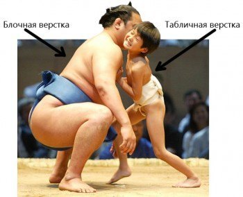

Верстка, это когда вам нужно из готового изображения (чаще всего это фотошоповской формат PSD) нужно сделать сайт. В большинстве случаев нужно не просто отверстать hrml страничку, а и натянуть (адаптировать) к какой-то популярной CMS.
В верстке я уже около 5 лет, и, можно даже сказать, сьел в этом деле не одну собачку;) Сейчас же я предоставляю услуги верстки:
Верстка div'ами (табличная по желанию заказчика)
Валидно согласно http://validator.w3.org/
При желании верстаю и проверяю под мобильные устройства
Кроссбраузерно для всех популярных браузеров
Верстка seo-оптиммизированная, учитывая последние рекомендации Google и Яндекс
При желании использую также рекомендации http://schema.org/
В верстке использую jQuery
Верстка нестандартных шрифтов
Кроме верстки сайт нужно же ещё натянуть на какую-то систему управления контентом. На сегодня я отлично натягиваю верстку сайта на такие популярные CMS как WordPress и DLE, несколько раз работал с интернет-магазином PrestaShop и некоторыми другими. Вообщем при верстке практически нет преград, если нужно — я могу безпроблемно изучить любую нужную вам цемееску. Единственное что — я не люблю Joomla, и могу только отверстать шаблон, но натягивать я откажусь практически во всех случаях.
Цены на верстку у меня достаточно демократичные, и цену я формирую по затратам времени, а не беру с потолка. Примерные расценки таковы:
- Верстка обычного html без использования джаваскриптов и всяких заморочек — от $20 за главную страницу и от $10 за внутреннюю. По срокам — около 8-9 часов на главную+внутреннюю. Пример такой верстки.
- Верстка html, в котором используются всевозможные слайдеры, карусельки или другие элементы, которые требуют дополнительных знаний — по цене обычно верстки, плюс от $5 за каждый дополнительный элемент, будь то формочка связи, слайдерок или какое-то крутое модальное окно. Пример такой верстки можно посмотреть вот тут
- Верстка из html и натяжка на какой-то движок. Цена формируется следующим образом — сначала я верстаю сайт в html (смотрим цены выше). Потом добавляю от 10 и выше за натяжку на движок. Зависит от сложности нужным вам элементов. Чаще всего стандартная верстка с нуля на WordPress или DLE обходится около $35-40, и выполняю я её за сутки. Примеры таких сайтов можно глянуть вот тут — DLE и WordPress
- Верстка на большие портальные или магазинные движки. При формировании цены учитывайте количество внутренних страниц которые нужно сначала отверстать, а потом и натянуть. Например на популярном движке для магазина PrestaShop таких внутренних страниц немногим более десятка. Как понимаете на работу по такому сайту уходит почти неделя, что и стоит соответственно. За верстку таких обьямных работ я беру от $150 в самых простых вариантах.
Оформить заявочку на верстку и/или натяжку сайта вы можете в специальной формочке, ну или просто связавшись со мной со странички контактов.


{kind=link}